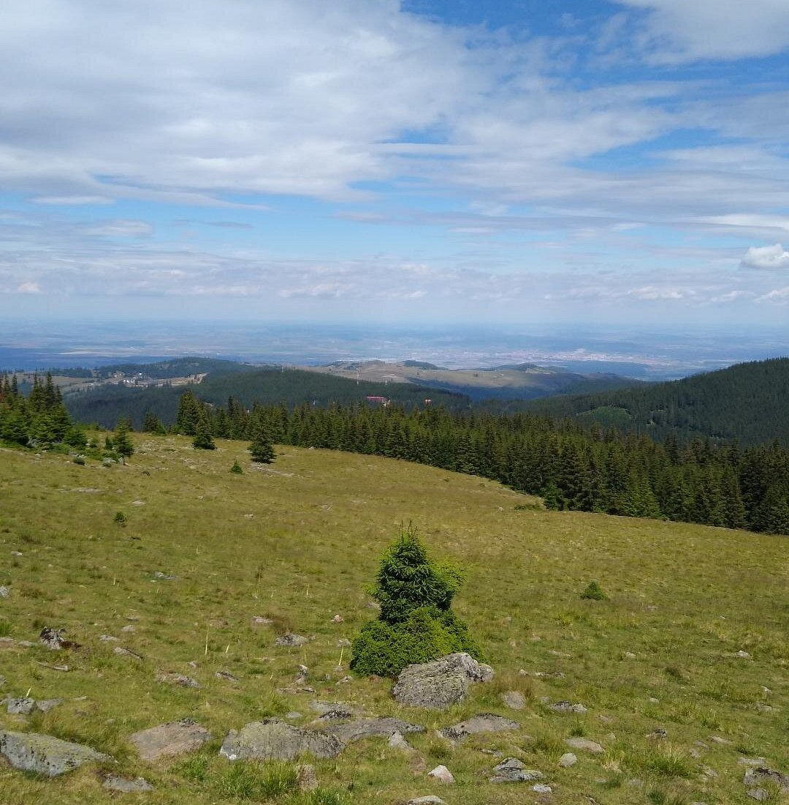
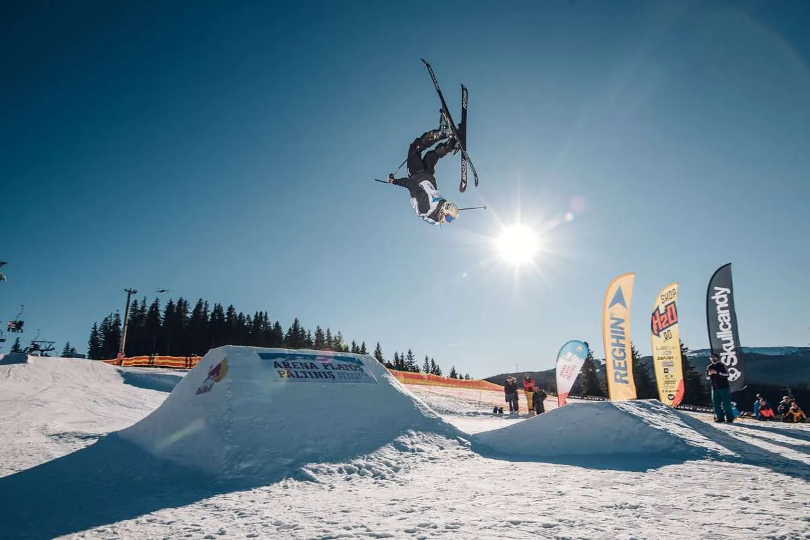
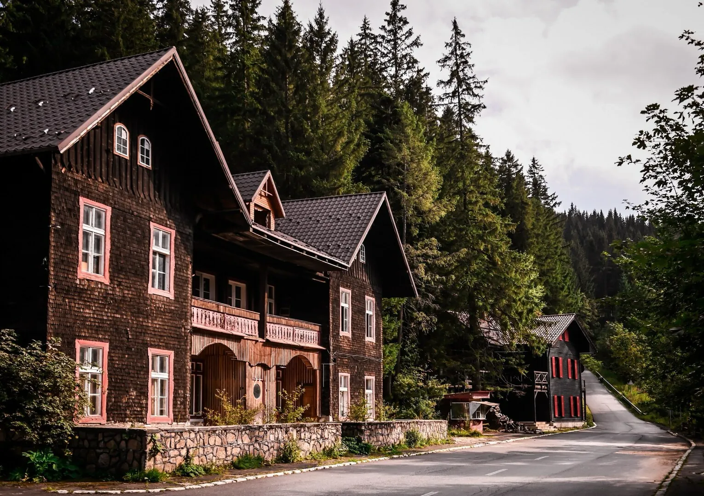
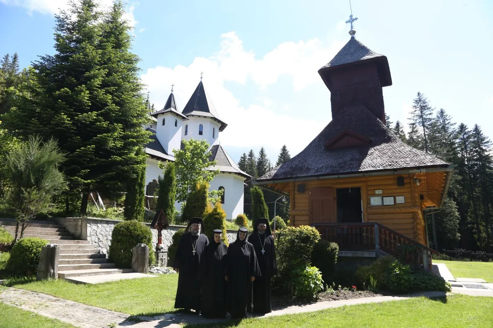
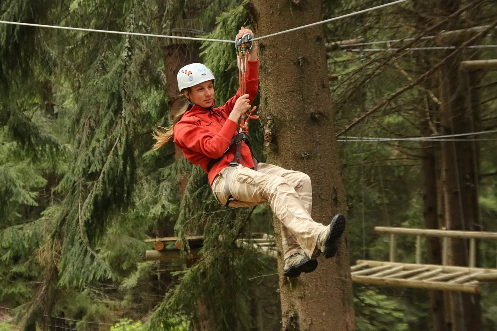
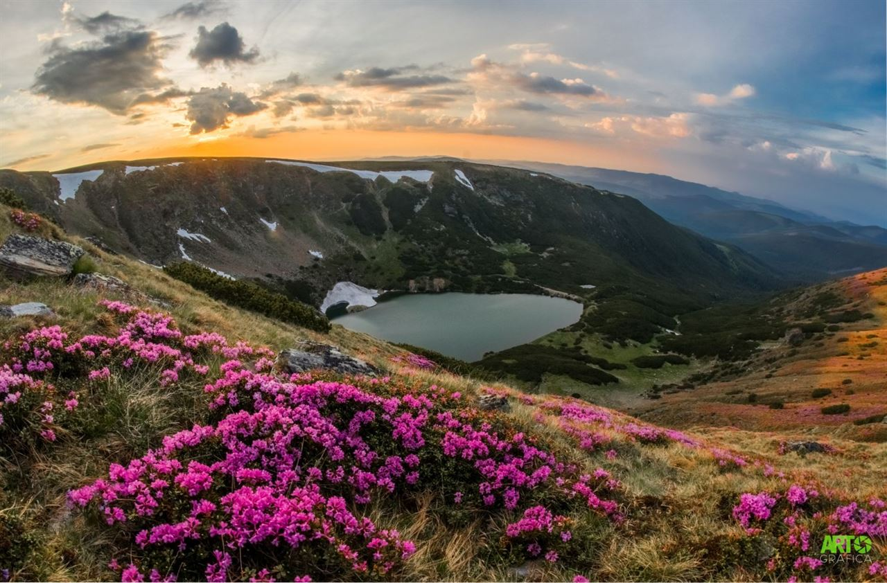

La doar șapte minute de mers pe jos se află domeniul schiabil Păltiniș Arena, cunoscut anterior ca Arena Platoș.
Domeniul are 5 pârtii și oferă activități și pentru cei care nu schiază. Pentru ei există o pârtie de săniuș și sunt bineveniți în cele două apres-ski-uri.
Stațiunea găzduiește săptămânal evenimente. Cele mai populare includ Freestyle Open, Miss Bikini și Slide&Freeze.
La 7 minute cu mașina de vilele noastre ajungeți în stațiunea veche a Păltinișului.
Stațiunea Păltiniș a fost fondată în 1894 de Societatea Carpatină Ardeleană a Turiștilor (SKV) în germană Siebenbürgischer Karpatenverein, fiind cea mai veche stațiune montană din România. Situată la 1.442 m altitudine, pe versantul nord-estic al Munților Cindrel, este și cea mai înaltă stațiune permanent locuită din țară.
Un fenomen interesant aici este inversiunea termică – uneori, când în Sibiu e frig, la Păltiniș poate fi mai cald.
Stiați că filosoful Constantin Noica și-a petrecut ultimii patru ani într-o căbănuța din Păltiniș? Această căbănuță poate fi văzută pe exterior, însă nu este un muzeu propriu-zis. În prezent, ea poate fi folosită de către tinerii doctoranzi în filosofie


Schitul Păltiniș a fost ctitorit în 1925 de Mitropolitul Nicolae Bălan, ca loc de rugăciune și retragere în mijlocul naturii. Bisericuța originală, din lemn de brad, a rezistat timpului și este păstrată în forma inițială. În 2013 a început construcția unei noi biserici, finalizată și funcțională astăzi. Schitul rămâne un loc de liniște, spiritualitate și continuitate liturgică.
În incinta schitului se odihnește marele filosof român Constantin Noica.
Recomandăm cu căldură vizita schitului, duminică dimineață pentru a lua parte la slujbă.
Parcul de aventură Arka Park propune o activitate potrivită atât copiilor, cât și părințiilor. Traseele sunt de dificultăți diferite și includ tiroliene, trasee supendate printre copaci. Există inclusiv trasee care pot fi completate doar prin munca în echipă, locația pretându-se inclusiv pentru un team building.
Avem o veste bună pentru amatorii de ciclism și anume faptul că se pot închiria biciclete electrice pentru două, respectiv cinci ore de la Arka Park Păltiniș.

Pe jos sau cu bicicleta. Hărți interactive + detalii.

